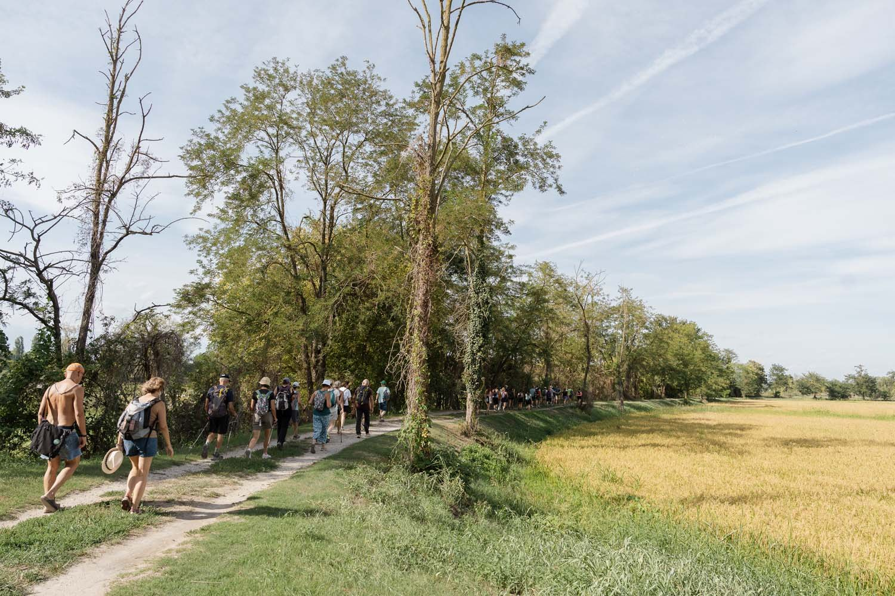
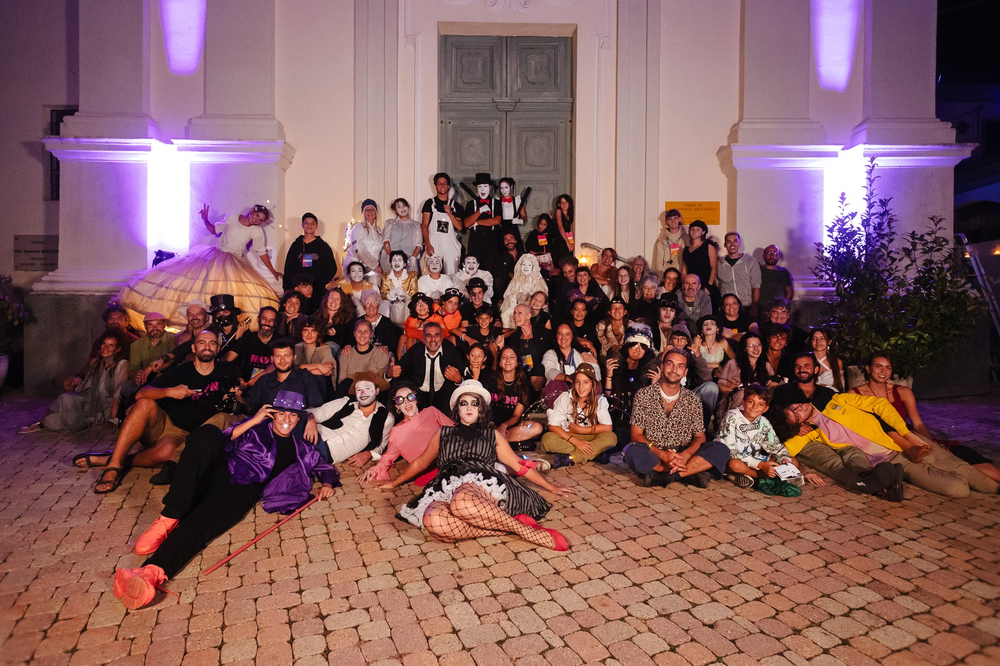
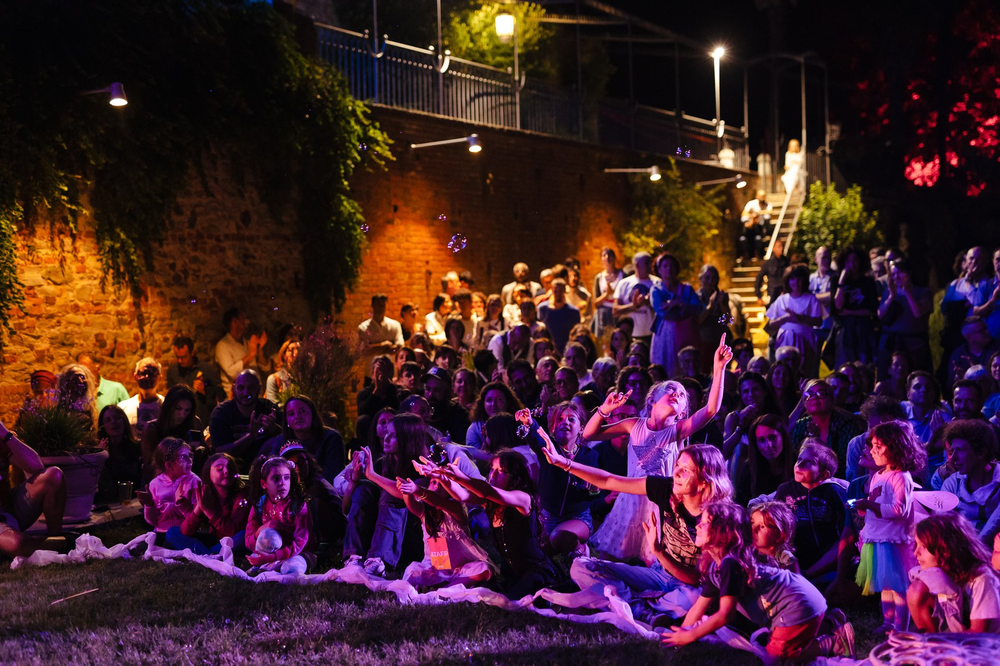

Accessibilità
Accessibilità.
Il Moon è un borgo di salite e di scale. Qui trovi cosa sapere prima di venire, per scegliere come viverlo.

© Ilum collettivo · Moon Festival, 5ª edizioneIl borgo
Un borgo da attraversare con calma.
Il festival si svolge a San Raffaele Alto, che si gira quasi tutto a piedi. Ci sono salite con pendenze fino al 12%, fondo irregolare, scale e qualche area che non è accessibile.
Le zone meno accessibili sono segnate sulla mappa, così puoi scegliere il tuo percorso.

© Stefano Druetta · Moon Festival, 3ª edizioneCome arrivare
Si sale in navetta.
Durante il festival in auto non si arriva fino al borgo: ci sono le navette dai parcheggi indicati.
La navetta costa 3 € a persona, in contanti o con Satispay (il Bancomat non è accettato). Se hai difficoltà economiche, segnalalo nel modulo di registrazione: il servizio è gratuito.
Hai esigenze di mobilità? Possiamo valutare un arrivo accompagnato fino al borgo. Se devi lasciare l’auto nell’area a valle, avvisaci 15 giorni prima dell’inizio del festival.
Supporto
Cosa c’è, cosa non c’è.
Persone cieche e ipovedenti
Non ci sono percorsi o strumenti dedicati. Ti consigliamo di venire con una persona di fiducia.
Lingua dei segni
Non è prevista la presenza di interpreti LIS.
Linguaggi degli spettacoli
Molti spettacoli usano linguaggi visivi, fisici e non verbali. Il programma indica gli alert e il pubblico consigliato.

© Stefano Druetta · Moon Festival, 3ª edizioneSuoni, luci e spazi tranquilli
Un festival a basso volume.
Niente concerti ad alto volume, niente luci stroboscopiche, niente fumo scenico.
L’area chill si raggiunge solo con degli scalini, quindi non è per tutti. Se cerchi un posto più tranquillo, chiedi allo staff: lo riconosci dalle magliette.
Servizi
Per stare bene.
Bagni
Tutti i bagni sono gender neutral. Due sono accessibili e segnati sulla mappa.
Acqua
Punti di acqua potabile gratuiti nel borgo.
Animali
Benvenuti se abituati ai luoghi affollati. In navetta solo cani di taglia medio-piccola, al guinzaglio e con museruola.
Contatti
Hai un’esigenza specifica?
Compila il modulo di registrazione oppure scrivici con oggetto «Accessibilità Moon Festival». Puoi anche parlarci su WhatsApp.